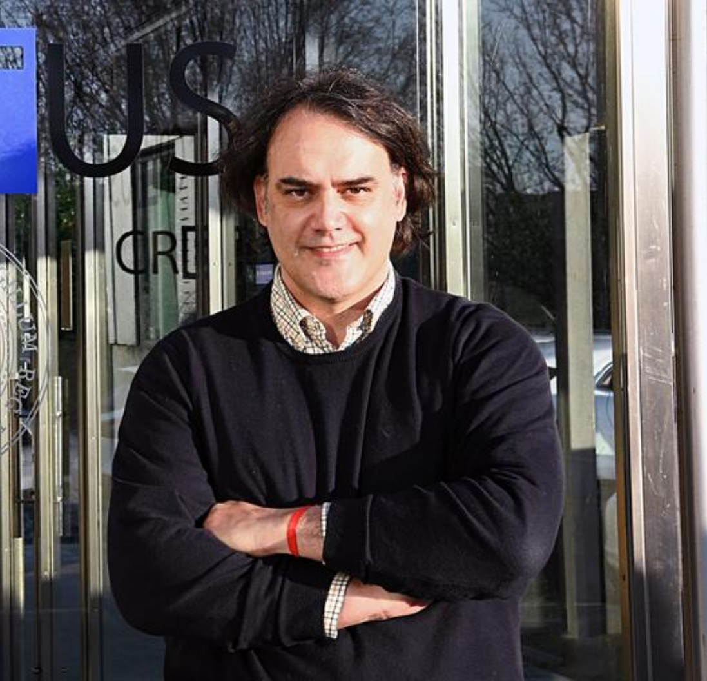
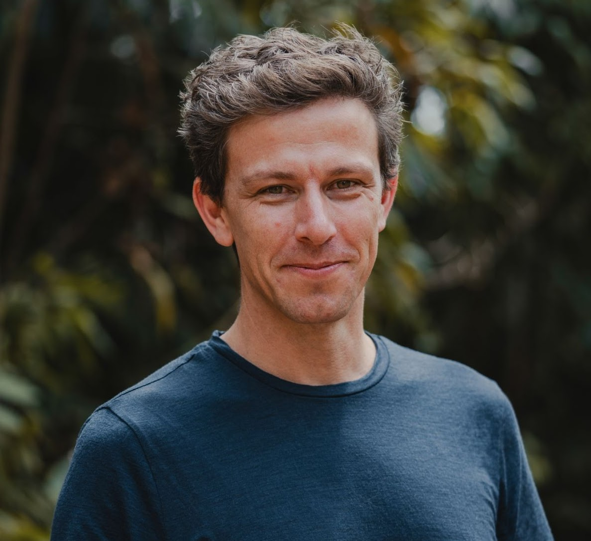
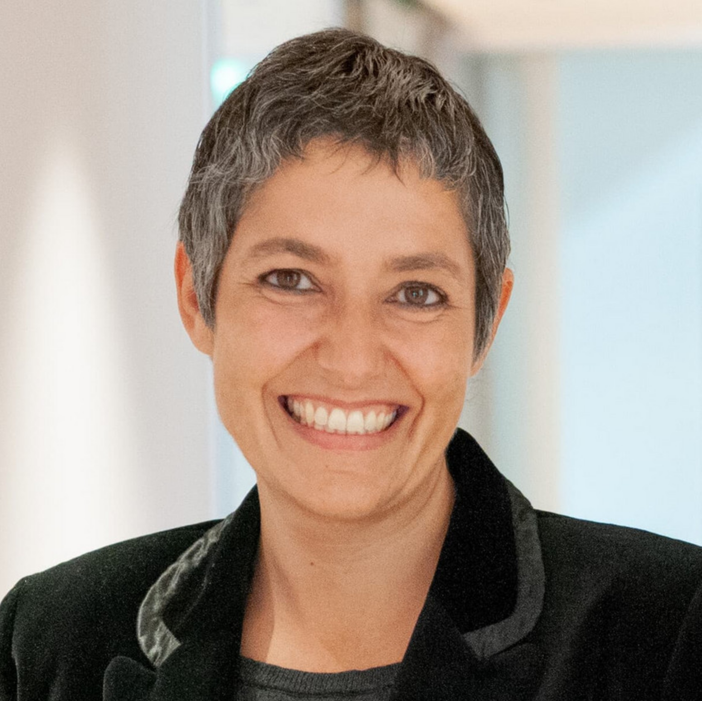
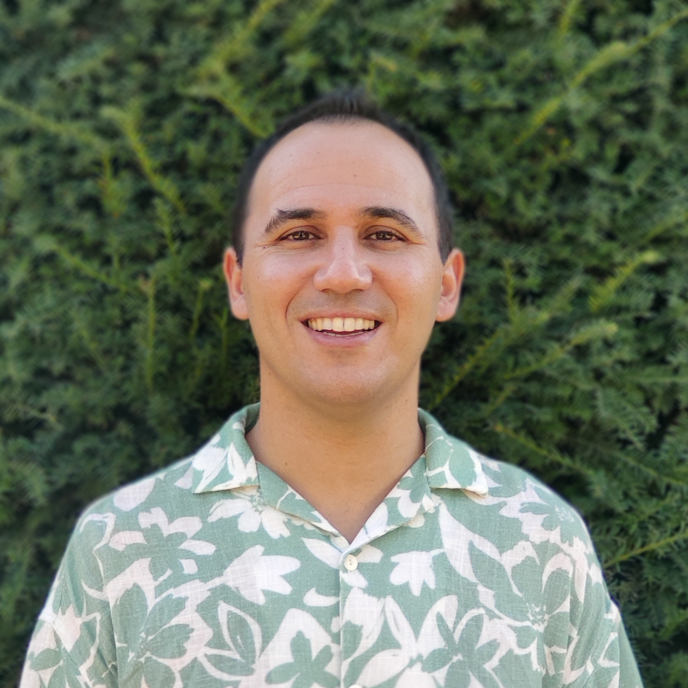

ColaboradorSebastián Villasante
Breve descripción de su contribución al proyecto.
Ver perfilREVALSEA reúne a un grupo interdisciplinario de investigadoras/es con experiencia en sostenibilidad, interacciones ser humano-naturaleza, técnicas de aprendizaje automático y análisis de datos.
Breve descripción de la investigadora principal, su experiencia y su papel dentro del proyecto.
Ver perfil
ColaboradorBreve descripción de su contribución al proyecto.
Ver perfil
ColaboradorBreve descripción de su contribución al proyecto.
Ver perfil
ColaboradoraBreve descripción de su contribución al proyecto.
Ver perfil
ColaboradorBreve descripción de su contribución al proyecto.
Ver perfil


El proyecto REVALSEA (No. 101146373) está financiado por la Unión Europea. Las opiniones y puntos de vista expresados solo comprometen a su(s) autor(es) y no reflejan necesariamente los de la Unión Europea o los de la Agencia Ejecutiva Europea de Educación y Cultura (EACEA). Ni la Unión Europea ni la EACEA pueden ser consideradas responsables de ellos.